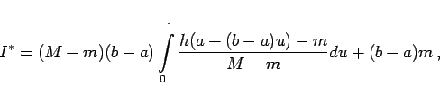

Inhalt Index DeskTop Bronstein

 Wahrscheinlichkeitsrechnung und Mathematische Statistik Mathematische Statistik Monte-Carlo-Methode Anwendungen der Monte-Carlo-Methode in der numerischen Mathematik
Wahrscheinlichkeitsrechnung und Mathematische Statistik Mathematische Statistik Monte-Carlo-Methode Anwendungen der Monte-Carlo-Methode in der numerischen Mathematik


Zunächst soll für Funktionen einer Variablen die Transformation des bestimmten Integrals
auf einen Ausdruck gezeigt werden, der das Integral
| (16.178) |
enthält. Danach kann die Monte-Carlo-Methode gemäß Beispiel für eine Monte-Carlo-Simulation angewendet werden. Man substituiert wie folgt:
Dadurch geht (16.178) über in
|  | (16.180) |
wobei der Integrand der Bedingung genügt.
Die näherungsweise Berechnung mehrfacher Integrale mit Hilfe der Monte-Carlo-Methode wird am Beispiel des Doppelintegrals
gezeigt. Mit S wird ein ebenes Flächenstück bezeichnet, das durch die Ungleichungen  und
und  beschrieben sein soll. Mit und
beschrieben sein soll. Mit und  sind gegebene Funktionen bezeichnet. Dann kann V als Volumen eines zylinderischen Körpers K aufgefaßt werden, der senkrecht auf der x,y-Ebene steht und für dessen Deckfläche gilt. Dieser Körper liege in dem Quader , der durch die Ungleichungen beschrieben wird. Nach einer Transformation analog zu (16.180) erhält man aus (16.182) einen Ausdruck, der das Integral
sind gegebene Funktionen bezeichnet. Dann kann V als Volumen eines zylinderischen Körpers K aufgefaßt werden, der senkrecht auf der x,y-Ebene steht und für dessen Deckfläche gilt. Dieser Körper liege in dem Quader , der durch die Ungleichungen beschrieben wird. Nach einer Transformation analog zu (16.180) erhält man aus (16.182) einen Ausdruck, der das Integral
enthält, wobei V* als Volumen eines Körpers K* im dreidimensionalen Einheitswürfel aufgefaßt werden kann. Das Integral (16.183) wird näherungsweise nach der Monte-Carlo-Methode wie folgt berechnet:
Von einer Folge von Zufallszahlen, die im Intervall [0,1] gleichverteilt sein sollen, faßt man je 3 als Koordinaten eines Punktes  des Einheitswürfels auf und prüft, ob Pi dem Körper K* angehört. Ist das für m Punkte der Fall, dann gilt analog zu (16.176)
des Einheitswürfels auf und prüft, ob Pi dem Körper K* angehört. Ist das für m Punkte der Fall, dann gilt analog zu (16.176)
| (16.183) |
Bei bestimmten Integralen mit einer Integratisionsveränderlichen sollte man die im Abschnitt Numerische Integration beschriebenen Verfahren anwenden.
Bei der Berechnung mehrfacher Integrale ist dagegen die Anwendung der Monte-Carlo-Methode durchaus zweckmäßig.